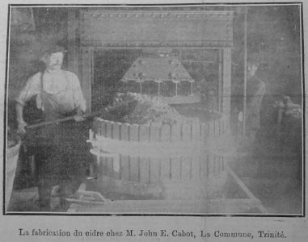
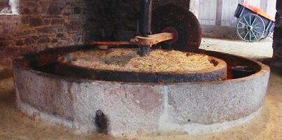

 La fèrme d'La C'meune à La Trinneté, un bouôn vièr mênage du temps pâssé, du seizième siècl'ye, i' pathaît, 'tait ieune des pus grand's pliaiches où'est qu' nou faîthait l'cidre en gros aut'fais, lé mênage dé la fanmil'ye Cabot. Péthe et fis fûdrent des grands fèrmièrs atout un grand troupé d'bestchias et plusieurs chévaux.
Mais ch'est comme faîtheurs dé cidre sustout qué nou veurt èrcorder tchiquechose entouor.
Dans san temps, Jean Wesley Cabot, lé péthe, gângnit des médales - trais en or, sept en argent et ieune en bronze, et des diplômes, pouor san cidre et ses pommes à cidre ès exhibitions à Paris, Marseilles, Lyon, et cétéra, et à la grande Exhibition des Îles de La Manche en 1871. Et toute chutte mangnifique collection a 'té présentée par san fis, John Ernest, à La Société Jersiaise.
Un temps fut nou-s-avait tout pliein d'pommes dans l'Île, les miyeuthes étant du France, du Doux Rom'thi, Gros et P'tit Loumé, des Belles Fil'yes, des Douoches Danmes, mais sustout du Caplyi, ches'-chîn étant considéthées absolument spéciales pouor lé cidre à boutilyi. Quand s'vînt un temps, dgia, tch'i' y'avait dé mains en mains d'pommes en Jèrri nou-s-eut à les faithe vénîn d'France. Nou-s-êtampait (faîthait l'cidre) au mais d'novembre et d'vant Noué - dans l'tou en pièrre dé Chausé et dans l'preinseu en bouais. Dé la tchue souos l'amet lé pur jus 'tait halé et vèrsé dans un tonné dé mille pots ou pus, et laîssi à bouoilli. Lé mar était fait sèrvi comme engrais dans les clios.
Dévant la Preunmié Dgèrre lé Sieur J. E. Cabot fit v'nîn d'Allemangne un preinseu "hydraulique", la chose la pus modèrne dé chu temps-là, et dé France et d'Angliétèrre deux tonnieaux atout lé d'dans en vèrre tchi cont'naient, iun chent bârritchies et l'aut' septante-chînq bârritchies d'cidre.
Dans chu-temps-là étout, et d'vant sans doute, les navithes à vailes emportaient l'cidre fait à La C'meune à Pliémue dans des tonnieaux dé huit chents pots. Ches navithes èrvénaient atout d's êcales d'hîtres pouor brûler dans l'fourné à caux à La C'meune, et nou r'vendait ch'la pouor sèrvi comme d'la caux.

Des gens d'partout l'Île v'naient atout hèrnais et j'vaux qu'si du cidre dé d'dans l'grand bâtisse à La C'meune. Lé ch'lyi n'éthait pon 'té grand assez! Les pus grands acateurs dé cidre étaient les marchands Lé Tchêne, Orviss et autres dé la Ville, et des grand's quantités allaient étout au collège dé "Highlands" et aut's dé la r'ligion catholique romaine dans l'Île. Et pis duthant la Preunmié Dgèrre les Cabots fournissaient la dgèrnîthon d'soudards Angliais à Bouonne Niet. Y'avait tréjous gentiment d'cidre boutilyi étout, bein seux, et vendu comme ch'la.
Eh bein, ch'est tout d'tchi tch'a dispathu, comme bein d'aut's choses qué nou-s-a connu en Jèrri aut'fais. Tout ch' tch'i' reste à La C'meune dé chutte vie du temps pâssé est l'preinseu, atout eune date dé 1838, et partie du fourné à caux.
"St. Ouonnais"
(auve un mio d'rêdaction)
Viyiz étout: